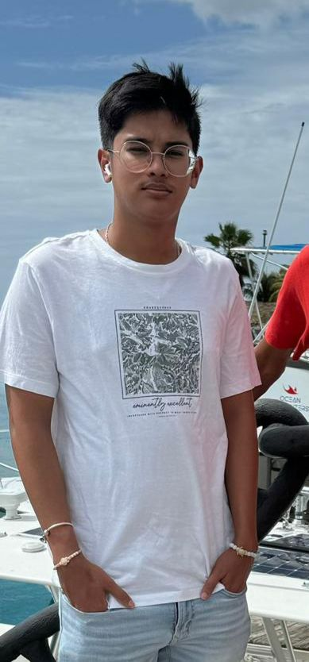

ABOUT ME
Ik ben Radj, een enthousiaste student met een grote passie voor programmeren en het bouwen van applicaties. Mijn programmeerreis begon in 2021 met de Harvard-cursussen in Python. Sindsdien ben ik mezelf stap voor stap blijven ontwikkelen en werk ik voortdurend aan het verbeteren van mijn technische vaardigheden. Python vormt de basis van mijn programmeerkennis, maar ik ben altijd gemotiveerd om nieuwe technologieën en programmeertalen te leren. Momenteel studeer ik Bedrijfskundige Informatica aan de UNASAT, waar ik niet alleen mijn programmeerkennis uitbreid, maar ook leer hoe ik IT-projecten effectief kan leiden en beheren. Daarnaast ben ik werkzaam bij Kewalbansing Realestate NV als onderdirecteur. In deze functie doe ik waardevolle ervaring op in management, organisatie en het begeleiden van verschillende bedrijfsprocessen. Hierdoor combineer ik mijn interesse in technologie met praktische ervaring binnen het bedrijfsleven. Ik houd ervan om creatieve oplossingen te bedenken, nieuwe dingen te leren en mezelf uit te dagen met verschillende projecten. Mijn doel is om mezelf verder te ontwikkelen tot een professionele softwareontwikkelaar en projectleider in de IT-wereld.
Radj Kewalbansing
Suriname
radjkewalbansing@icloud.com
pyhon development